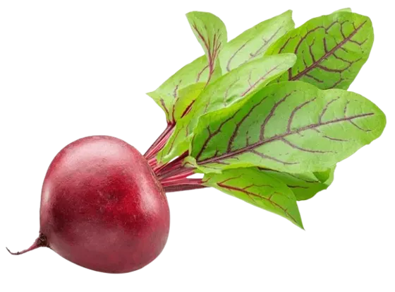

Plant Grimoire
Beet
Notes/Warnings
Large amounts of beet leaves are not recommended for internal use.
Origin
MediterraneanEuropeWest Asia
Scientific Name
Beta vulgaris
Safety & Uses
Safe for HumansSafe for Pets
USDA Hardiness Zone
2a2b3a3b4a4b5a5b6a6b7a7b8a8b9a9b10a10b11a11b
Type
VegetableRootLeaf
Gender
Feminine
Also called
Beetroot, Garden Beet, Blood Turnip
Astrology3
Correspondences1
Dreams1
Timing1
Beet (Beta vulgaris) is a root vegetable with edible leaves and sweet, earthy roots.
Magickal Properties
- Gender: Feminine
- Planet: Saturn
- Element: Earth
- Powers: Love
Folk Names
Mangel, Mangold
Magickal Uses
If a man and woman eat of the same beet, they will fall in love.
Beet juice is used as an ink in love magic, and is also used as a blood substitute in magickal workings.
⚠️ Safety Note: Large amounts of beet leaves are not recommended for internal use.
USDA Hardiness Zone for Beta vulgaris sourced from the USDA NRCS PLANTS Database and the Missouri Botanical Garden Plant Finder (biennial cultivated as an annual cool-season crop).